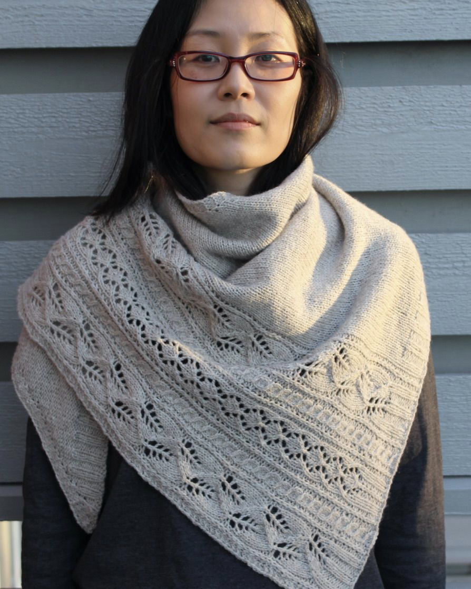

I’m a Canadian who now lives in Norway by way of the United States, Switzerland, and the Netherlands. I speak English, French, German, Dutch and Norwegian, and can also read Danish, Swedish, basic Spanish and Catalan.
As a freelance knitting designer, I publish patterns for accessories like shawls, scarves, mittens, and hats. I think of designing as a form of problem solving in which the "problem" of a garment is "solved" by an aesthetically optimalized combination of motifs within the limits of form and construction. My style combines traditional motifs in non-traditional ways, of which the best example is also one of my most popular patterns: the Eat the Rich beanie, which combines political activism with a traditional Norwegian lily motif.
My other great love is World War I research (an admittedly strange place to end up given that I was educated as a medievalist and have spent most of my life in countries that were neutral during the conflict). Using soldiers' correspondence, newspapers, photographs, and other primary sources, I focus on German and Norwegian experiences of the war. Among other things, I've written about wartime food shortages in Norway, knitting patterns for German soldiers, and the myth of the crucified Canadian. I also volunteer on the Great War Forum as a translator and amateur genealogist with a focus on Imperial German sources.
My brother once suggested that I put “easily trainable” on my CV -- a description that I think makes me sound like an overly enthusiastic dog, although it remains a fact that in recent years I have taught myself to read German cursive script (Kurrentschrift) as well as Swedish. This website is also evidence of that ability: in order to create it, I learned to code basic HTML.